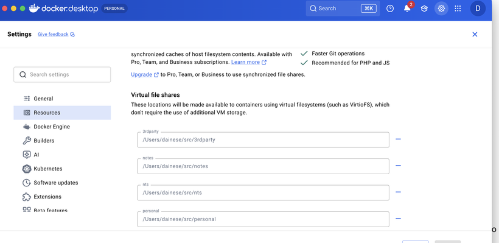
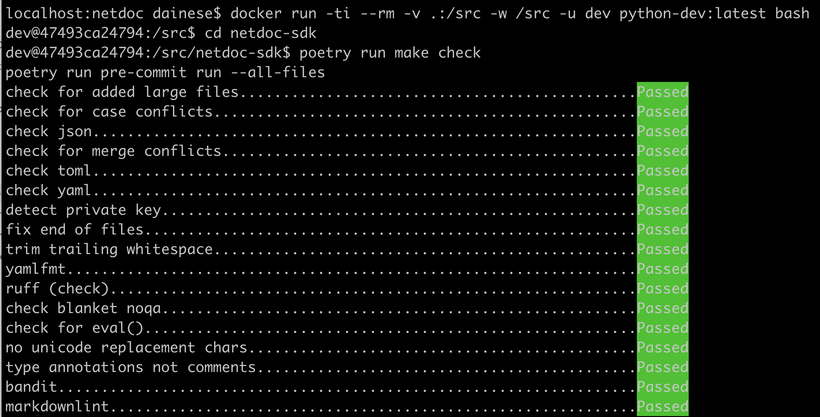
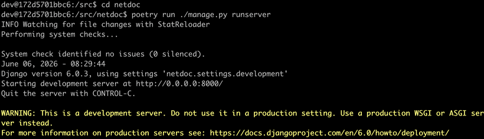

Preotecting Your Development Environment¶

For quite some time now, I've been closely and with growing concern following the evolution of attacks targeting open-source libraries — attacks specifically designed to compromise the software supply chain. The concept is straightforward: certain libraries, developed and maintained by individuals or small teams, are distributed across millions of systems worldwide. Compromising one of these libraries means gaining control over an enormous network of machines.
The most notorious attack of this kind involved the XZ Utils library (2024). The specific characteristics of that attack strongly suggest it was state-sponsored. Fortunately, it was intercepted in its early stages — because the potential impact would have been catastrophic.
Other notable attacks of the same nature targeted PyTorch (2022), Colors and Faker (2022), and Axios (2026).
The last incident — the Axios compromise — is what finally convinced me to fundamentally change my development workflow. Today, there is no reliable way to know whether the libraries we use, directly or transitively, contain malicious code. By the time we find out, it will simply be too late.
In my work, I frequently develop software integrations for multiple clients in parallel. If I were to use a compromised library in any one project, my machine would be compromised — and with it, every client integration I'm actively working on.
Given the increasing frequency of these events, and what I believe lies ahead, I concluded that the risk was no longer acceptable. A change in approach was necessary.
Sandboxing (macOS)¶
Coming from the Linux world, I had a strong appreciation for Firejail: simple to configure, easy to use, and a solid model to follow when looking for an equivalent on macOS — my current platform.
Few people know that macOS includes a native sandbox. It is poorly documented, its long-term support is uncertain, but it exists — and in my opinion it's here to stay. On first read, it reminded me a great deal of Firejail, and it became my first candidate.
The appeal of a native sandbox was clear: it would let me stay on my existing operating system without introducing additional infrastructure layers (which we'll explore later).
To use the sandbox, you need to create a profile — a configuration file that defines what is and is not permitted. Here's a basic example:
(version 1)
(allow default)
(deny network*)
(allow file-read-metadata
(regex "^/Users/[^/]")
)
(deny file-read*
(regex "^/Users/")
)
(allow file-read*
(regex "^/dev")
(regex "^/private")
(regex "^/usr/bin")
(regex "^/Users/[^/]+/.cache/pre-commit")
(regex "^/Users/[^/]+/.ansible")
(regex "^/Users/[^/]+/.gitconfig")
(regex "^/Users/[^/]+/.ssh/known_hosts")
(regex "^/Users/[^/]+/.terraform.d")
(regex "^/Users/[^/]+/src/")
)
The profile starts by inheriting sandbox defaults, then extends them as needed. In this example, I allow the sandbox to read metadata from the entire Users directory, but restrict file content access to specific subdirectories only.
One immediate limitation becomes apparent: to avoid creating a separate profile for every development environment, I would need a generalized profile — but that means broader permissions, which defeats the purpose.
Write permissions can be configured in a similar fashion:
(deny file-write*)
(allow file-write*
(regex "^/dev")
(regex "^/private")
(regex "^/Users/[^/]+/.cache/pre-commit")
(regex "^/Users/[^/]+/.terraform.d")
(regex "^/Users/[^/]+/src/")
)
All malware, to function, needs outbound network access. My profile therefore disables networking entirely.
However, this makes many essential tools unusable — including package managers like pip and poetry. To address this, I created a second, identical profile with one addition:
With the profiles in place, you can execute a command inside the sandbox using:
$ sandbox-exec -f /Users/dainese/src/personal/template/.profile.sb bash
The default interactive shell is now zsh.
To update your account to use zsh, please run `chsh -s /bin/zsh`.
For more details, please visit https://support.apple.com/kb/HT208050.
localhost:~ dainese$ ls /Users/dainese/
ls: /Users/dainese/: Operation not permitted
The shell runs inside the sandbox and is blocked from executing operations that would otherwise be permitted on the host system.
For convenience, I defined two shell aliases:
sb— launches a sandbox using the no-network profilesbn— launches a sandbox using the network-enabled profile
alias sb='sandbox-exec -f /Users/dainese/src/personal/template/.profile.sb'
alias sbn='sandbox-exec -f /Users/dainese/src/personal/template/.profile-w-network.sb'
The final piece is logging. To understand what the sandbox is blocking — and refine the profile accordingly — you can stream sandbox events in real time using the log utility:
$ log stream --style compact --predicate 'sender=="Sandbox" && eventMessage CONTAINS[c] "python"'
Filtering the log data using "sender == "Sandbox" AND composedMessage CONTAINS[c] "python""
Timestamp Ty Process[PID:TID]
2026-06-06 09:39:19.294 E kernel[0:59ffbf] (Sandbox) Sandbox: python3.12(49222) deny(1) file-read-data /Users/dainese
In this specific case, the sandbox reports that the running process is attempting to access /Users/dainese.
After several weeks of use, I concluded that the sandbox was not the right approach. I was forced to add too many exceptions to avoid impacting project timelines — and every exception was a potential vulnerability. I needed a more flexible solution, one better aligned with my actual workflow.
From Sandbox to Containers¶
My IDE of choice is Visual Studio Code. VSCode offers native Docker integration, enabling the entire development and testing lifecycle to run inside containers. I spent several days evaluating this feature, but ultimately discarded it: the setup felt unnecessarily complex, and — critically — it required per-project customization.
To be more precise: in my day-to-day work, the scope of what I develop varies enormously. It can range from complex integrations involving multiple heterogeneous environments (Python, Terraform, external services) to simple throwaway scripts written in under an hour and never touched again.
Both scenarios require external libraries. Both scenarios must be handled without significant overhead. I cannot afford to spend an hour configuring an environment for a task that takes thirty minutes to complete.
So I returned to containers — via Docker. I had previously avoided this solution on macOS because execution is not native (due to processor architecture differences), and it requires running a virtual machine as the Docker host. As it turns out, this architectural constraint is actually an advantage: compared to a native Linux environment, it introduces an additional isolation layer between macOS and the container.
The question was simply: how flexible is Docker on macOS in practice?
Containers via Docker Desktop¶
The standard solution for running Docker on macOS is Docker Desktop — essentially a management interface for the underlying virtual machine that acts as the Docker host, along with image and container management.
The first step is to define which local macOS directories will be visible to containers. This is configured under Settings → Resources → File Sharing → Virtual File Shares.

In my setup, all source code lives under a single root directory (src), organized into subdirectories: personal, 3rd-party(external collaborative projects), and nts (company projects).
The next step is building a base image that includes everything needed for development. I wrote a simple Dockerfile that defines the build steps:
FROM python:3.12-slim
ENV POETRY_HOME="/opt/poetry"
ENV POETRY_NO_INTERACTION=1
ENV POETRY_VERSION=2.3.4
ENV POETRY_VIRTUALENVS_IN_PROJECT=true
ENV PYTHONDONTWRITEBYTECODE=1
ENV PYTHONUNBUFFERED=1
ENV PRE_COMMIT_HOME=/src/.cache/pre-commit
ENV PATH="$POETRY_HOME/bin:$PATH"
RUN apt-get update && apt-get install -y --no-install-recommends curl git libatomic1 make openssh-client tree && curl -sSL https://install.python-poetry.org | python3 - && rm -rf /var/lib/apt/lists/*
# Non-root user for security
RUN useradd -m dev
USER dev
# Add relaxed SSH client config
RUN mkdir -p /home/dev/.ssh && chmod 700 /home/dev/.ssh
COPY --chown=dev:dev ssh_config /home/dev/.ssh/config
RUN chmod 600 /home/dev/.ssh/config
WORKDIR /src
Key decisions in the image:
- Base image: Python 3.12-slim
- Environment variables common to all my projects
- Development utility packages
- A non-root user with a relaxed SSH configuration
Because some of my integrations target legacy devices, I occasionally need a weakened SSH configuration to maintain compatibility:
KexAlgorithms +diffie-hellman-group-exchange-sha1,diffie-hellman-group14-sha1
HostKeyAlgorithms +ssh-rsa
Ciphers +aes128-ctr,aes192-ctr,aes256-ctr
MACs hmac-sha1,hmac-sha1-96
Host *
ServerAliveInterval 5
ServerAliveCountMax 3
ForwardAgent yes
Build the image with:
Once the build is complete, spin up a container with:
At this point, all the pieces are in place. Let's put them together.
Practical Examples¶
My four core use cases are:
- Run a one-off command
- Get an interactive shell inside a container for multi-step operations, optionally chaining output
- Same as above, but with a long-running server process (e.g., Django)
- Open additional shells inside an already-running container for cross-validation
In all four cases, I need:
- Access to the macOS filesystem, where Visual Studio Code is running
- A persistent environment (Python venv, Poetry, pre-commit) that doesn't need to be rebuilt from scratch each time
A container with a mapped local directory can be launched as follows:
Flag breakdown:
--rm— removes the container immediately after exit, ensuring a clean state every time-v .:/src— mounts the current macOS directory as/srcinside the container;-w /srcsets it as the working directory-u dev— runs as the non-rootdevuser-tand-i— allocate a TTY and keep stdin open, making the container shell feel local
To expose a TCP port, use the -p flag to map a local port to the container.
Use case 1 — One-off command¶
Navigate to the project directory and run:
The build script executes via Poetry inside the container. The container is immediately destroyed afterward.
Use case 2 — Interactive shell¶
Navigate to the project directory and run:
From here, you can work continuously inside the container:

Use case 3 — Server process¶
Navigate to the project directory and run:
Port 8000 on the container is now reachable via port 8000 on macOS:

Use case 4 — Additional shell in an existing container¶
Retrive the container ID from docker ps and run:
Any environment requiring persistence must write to /src — the only persistent directory. Code written there is saved to the macOS filesystem, but is never executed by macOS directly. Python virtual environments, pip, and Poetry are all installed and run by the Linux container; they are not macOS-executable binaries. All dependencies and packages are scoped entirely to the container.
This approach covers 100% of my current use cases. It isolates each project's development environment, and keeps my macOS system clean of packages whose origin cannot be verified or controlled.
Extensions, Libraries, and Plugins¶
Some residual attack surface remains. In my case: Visual Studio Code extensions, browser extensions, and a small number of Homebrew packages.
I've been operating under a zero-trust philosophy for some time now. I install only the extensions that are strictly necessary, sourced exclusively from verified, reputable vendors. Browser extensions are kept to an absolute minimum and installed only in a dedicated browser that has no access to credentials. I maintain a separate browser for security-sensitive tasks, and another for general browsing and anonymous research.
Third-party software is used sparingly — only when essential and when containerization is not a viable option.
The risk of inadvertently running malicious software cannot be eliminated entirely. But with this setup, the attack surface has been dramatically reduced.